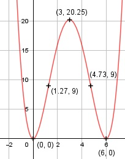

Aufgabe 47 f(x) = 0,25x4 - 3x3 + 9x2 f'(x) = x3 - 9x2 + 18x, f''(x) = 3x2 - 18x + 18, f'''(x) = 6x - 18 Definitionsbereich: -∞ < x < ∞ Wertebereich: 0 ≤ f(x) < ∞ Asymptoten: - Symmetrie: - Nullstellen: 0,25x4 - 3x3 + 9x2 = 0 0,25x2 * (x2 - 12x + 36) = 0 0,25x2 = 0 |:0,25 x1,2 = 0 (Berührpunkt, Extrempunkt) x2 - 12x + 36 = 0 p, q - Formel: p = -12, q = 36 x3,4 = x3,4 = 6 ± x3,4 = 6 ± --> x3,4 = 6 (Berührpunkt, Extrempunkt) N1,2(0|0), N3,4(6|0) Schnittpunkt mit der y-Achse: f(0) = 0,25 * 04 - 3 * 03 + 9 * 02 = 0 Sy(0|0) Extrempunkte: x3 - 9x2 + 18x = 0 x * (x2 - 9x + 18) = 0 x1 = 0 x2 - 9x + 18 = 0 p, q - Formel: p = -9, q = 18 x2,3 = x2,3 = 4,5 ± x2,3 = 4,5 ± x2,3 = 4,5 ± 1,5 x2 = 6, f(6) = 0 x3 = 3 f(3) = 0,25 * 34 - 3 * 33 + 9 * 32 = 20,25 f''(0) = 3 * 02 - 18 * 0 + 18 > 0 --> Tiefpunkt (0|0) f''(6) = 3 * 62 - 18 * 6 + 18 > 0 --> Tiefpunkt (6|0) f''(3) = 3 * 32 - 18 * 3 + 18 < 0 --> Hochpunkt (3|20,25) Wendepunkte: 3x2 - 18x + 18 = 0|:3 x2 - 6x + 6 = 0 p, q - Formel: p = -6, q = 6 x1,2 = x1,2 = 3 ± x1,2 = 3 ± --> x1,2 = 4,5 ± 1,5 x1 = 4,73 f(4,73) = 0,25 *4,734 - 3 * 4,733 + 9 * 4,732 = 9 x2 = 1,27 f(1,27) = 0,25 * 1,274 - 3 * 1,273 + 9 * 1,272 = 9 f'''(4,73) = 6 * 1,73 - 18 ≠ 0 --> Wendepunkt (4,73|9) f'''(1,27) = 6 * 1,27 - 18 ≠ 0 --> Wendepunkt (1,27|9) Graph:
